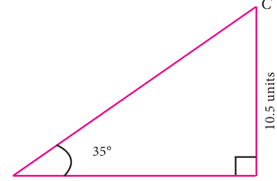
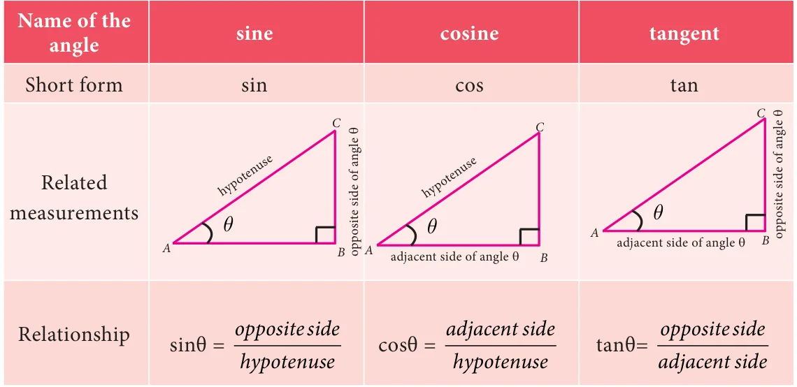
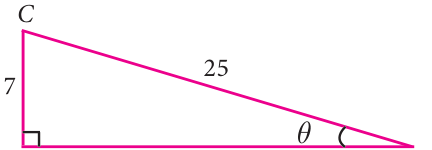
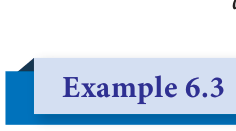
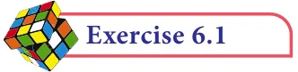
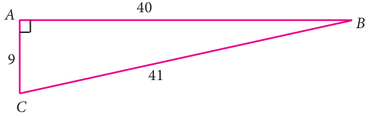
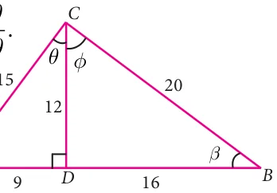

6 TRIGONOMETRY
There is perhaps nothing which so occupies the middle position of mathematics as Trigonometry.- J. F. Herbart
Euler, like Newton, was the greatest mathematician of his generation. He studied all areas of mathematics and continued to work hard after he had gone blind. Euler made discoveries in many areas of mathematics, especially Calculus and Trigonometry. He was the first to prove
Leonhard EulerAryabhatta
(AD (CE) \(1707 - 1783)(A.D\) (CE) \(476 - 550)\) several theorems in Geometry.
Learning Outcomes
 To understand the relationship among various trigonometric ratios.  To recognize the values of trigonometric ratios and their reciprocals.  To use the concept of complementary angles.
 To understand the usage of trigonometric tables.
6.1 Introduction
Trigonometry (which comes from Greek words trigonon means triangle and metron
means measure) is the branch of mathematics that studies the relationships involving lengths of sides and measures of angles of triangles. It is a useful tool for engineers, scientists and surveyors and is applied even in seismology and navigation.
Observe the three given right angled triangles; in particular scrutinize their
measures. The corresponding angles shown in the three triangles are of the same size. Draw your attention to the lengths of “opposite” sides (meaning the side opposite to the given angle) and the “adjacent” sides (which is the side adjacent to the given angle) of the triangle.

\(\frac{35 ^{\circ} }{A5\) unitsB} 10 units 20 units
oppositeside
What can you say about the ratio adjacent side in each case? Every right angled
triangle given here has the same ratio 0.7 ; based on this finding, now what could be the length of the side marked ‘x’ in the Fig 6.2? Is it 15?

Such remarkable ratios stunned early
mathematicians and paved the way for the subject of trigonometry.
There are three basic ratios in trigonometry, each units of which is one side of a right-angled triangle divided Fig. 6.2 by another. The three ratios are:


For the measures in the figure, compute sine, cosine and tangent ratios of the angle q .
Solution

In the given right angled triangle, note that for the given angle q , PR is the ‘opposite’ side and PQ is the ‘adjacent’ side.
sinθ = oppositeside \(= =\) hypotenuse QR 37

cosθ = adjacent side \(= PQ = 12\) hypotenuse QR 37
tanθ = oppositeside \(= PR = 35\) adjacent side PQ 12
It is enough to leave the ratios as fractions. In case, if you want to simplify each ratio neatly in a terminating decimal form, you may opt for it, but that is not obligatory.


Reciprocal ratios
We defined three basic trigonometric ratios namely, sine, cosine and tangent. The reciprocals of these ratios are also often useful during calculations. We define them as follows:

From the above ratios we can observe easily the following relations: cosec θ \(= \frac{1}{sinq}\) sec θ \(= \frac{1}{cosq}\) cot θ \(= \frac{1}{tanq}\) sinθ \(= \frac{1}{cosecq}\) cos θ \(= \frac{1}{secq}\) tan θ \(= \frac{1}{cotq}\) (sin ) (cosecq) 1. We usually write this as sinθ cosecθ 1.
(cos ) (secq) 1. We usually write this as cosθ secθ \(= 1\). (tan ) (cotq) 1. We usually write this as tanθ cotθ \(= 1\).


Find the six trigonometric ratios of the angle q using the given diagram.
Solution
By Pythagoras theorem,


\(= =\) adjacent side of angle θ
The six trignometric ratios are
sinq = oppositeside \(= 7\) cosq = adjacent side \(= 24\) hypotenuse 25 hypotenuse 25
tanq = oppositeside \(= 7\) cosecq = hypotenuse \(= 25\) adjacent side 24 oppositeside 7
sec = adjacent sidehypotenuse \(= 2425\) cotq = adjacent sideoppositeside \(= 247\)

If tan \(A = \frac{2}{3}\) , then find all the other trigonometric ratios.

Solution
tan \(A =\) oppositeside \(= 2\) adjacent side 3 By Pythagoras theorem,

= Fig. 6.7
sin \(= \frac{oppositeside}{hypotenuse} =\) cos \(A =\) adjacent sidehypotenuse \(= 313\) cosec \(= \frac{hypotenuse}{oppositeside} =\) sec \(A =\) adjacent sidehypotenuse \(= 313\)

If secq \(= \frac{13}{5}\) , then show that \(2 \frac{sinq3cosq}{4sinq9cosq} 3\)
Solution:
Let \(BC =13\) and \(AB = 5\)
secq = hypotenuse \(= BC = 13\) adjacent side AB 5
By the Pythagoras theorem,
2 2 adjacent side of angle θ
Fig. 6.8

Therefore, sinq \(= \frac{AC12}{BC13} =\) ; cos \(= \frac{AB5}{BC13} =\)

\(LHS \frac{2sinq3cosq}{4sinq9cosq} = \frac{9}{3} = 3 = RHS\)
Note: We can also take the angle ‘q ’ at the vertex ‘C’ and proceed in the same way.

- 1.From the given figure, find all the trigonometric ratios of angle B.

- 2.From the given figure, find the values of

- (i)sinB (ii) secB (iii) cot B
- (iv)cosC (v) tanC (vi) cosecC
- 3.If 2cosq \(= 3\) , then find all the trigonometric ratios of angle q .
- 4.If cos \(A = \frac{3}{5}\) , then find the value of \(\frac{sinA -\) cosA}{2tanA} .
- 5.If cos \(A \frac{2x}{1x2}\) , then find the values of sinA and tanA in terms of x.
- 6.If sinq a , then show that bsinq = acosq .
- 7.If 3cot \(A = 2\) , then find the value of \(\frac{4sinA3cosA}{2sinA3cosA}\) .
- 8.If cosq : sinq =1:2,then find the value of \(\frac{8cosq2sinq}{4cosq2sinq}\)

- 9.From the given figure, prove that θ φ 90 .
Also prove that there are two other right angled triangles. Find sina, cosb and tanf .